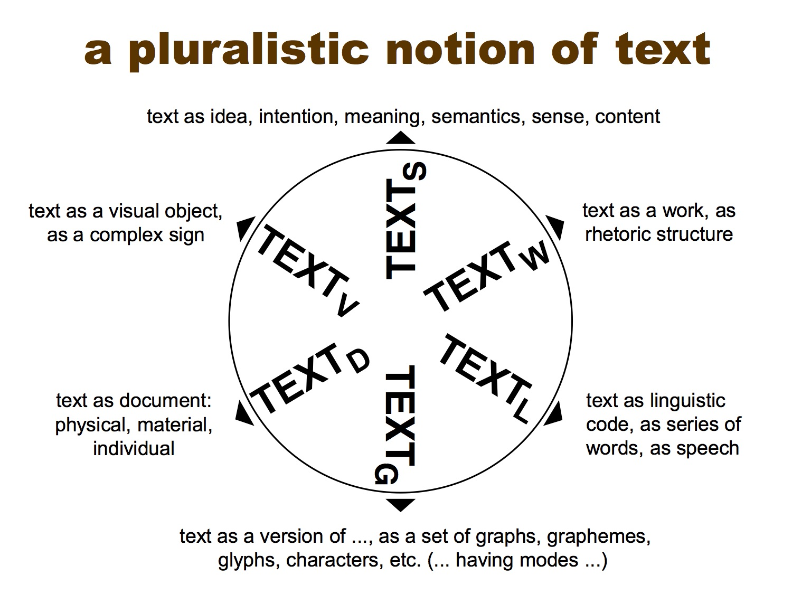

Day 2
Tuesday, 25 June 2019
Summary
Today will feature an introduction to the Text Encoding Initiative (TEI), followed by a guest lecture on editing the Classics in print and digital formats.
| Time | Topic | Type |
|---|---|---|
| 9.30 | Seminar 3: Introduction to the Text Encoding Initiative (TEI) | Presentation, Discussion |
| 11.30 | Seminar 4: Editing the Classics (Simona Stoyanova) | Digital lab |
| 14.00 | Seminar 5: What is documentary editing? | Discussion |
| 16.00 | Library Time |
Readings
- G. Thomas Tanselle, “The Editing of Historical Documents.”
- Lou Burnard, What is the TEI?
- James Cummings, “The Text Encoding Initiative and the Study of Literature”
- Elena Pierazzo, Digital Scholarly Editing (Chapter 2).
Introduction to the Text Encoding Initiative
Access the TEI intro slides here.
Exercise
Access the Tennyson text you worked with yesterday and encode it in TEI. You should have a preview of the transcribed text, so you just need to copy the text into oXygen and apply the correct tags using command + e (or control + e in Windows). Also be sure to enter the required information in the TEI header: the most minimal TEI header is a
<titleStmt><publicationStmt><sourceDesc>
Once you have the basic structure, add some attributes such as dd @n and @xml:id to elements.
Access the TEI Core Module slides here.
Editing the Classics (Simona Stoyanova)
Access the slides here.
And a cheatsheet.
For the exercise, download this epiDoc template file.
For more informations, access this epiDoc structural cheatsheet.
Also, a slideshow on textual corrections.
What is Documentary Editing?
Like all diplomatic transcription except type facsimile, plain text does not reproduce, simulate, or report the original lineation, pagination, or any other formal aspect of the manuscript, save where the writer intended it to bear meaning and that meaning is transcribable—which is exactly why it does reproduce or simulate many formal elements, such as various kinds of indention and purposeful lineation. ‘Guide to Editorial Practice, (MTDP 00005).’ In Mark Twain Project Online. Berkeley, Los Angeles, London: University of California Press. 2007.
Lecture Notes
To make a long article short: transcribe as much as possible in a documentary edition.
The old divide between literary and historical editing. Historical: more about annotation (contextual commentary). Literary: more about textual variants.
Naive view: literary editing produces eclectic texts, historical editors produce "faithful" texts.
Literalness and exactness and critical. Faithfulness?
Modernisation, regularisation, standardisation. What is lost by the editor imposing regularity and spelling changes on a historical or private document.
Have a look at this [letter from Mark Twain](http://www.marktwainproject.org/xtf/view?docId=letters/UCCL00286.xml;query=proof;searchAll=;sectionType1=;sectionType2=;sectionType3=;sectionType4=;sectionType5=;style=letter;brand=mtp#1).
Felicity to the document or to the reader?
Type facsimile: either a photographic reproduction or near approximation of every physical feature of a document, including line breaks and non-verbal features.
Diplomatic: "A proof-reader who persists in making two words (& sometimes even compound words) of “anywhere” and “everything;” & who spells villainy “villiany” & “liquifies” &c, &c, is
not three removes from an idiot.—infernally unreliable— & so I don’t like to trust your man.";Semi-diplomatic: "A proof-reader who persists in making two words (& sometimes even compound words) of “anywhere” and “everything;” & who spells villainy “villiany” & “liquifies” &c, &c is
not three removes from an idiot.—infernally unreliable—& so I don’t like to trust your man.";Clear text: "A proof-reader who persists in making two words (and sometimes even compound words) of “anywhere” and “everything;” and who spells villainy “villiany” and “liquifies” etc, etc, is infernally unreliable–and so I don’t like to trust your man.".
Yet another option, which is one of the most pragmatic, is plain text, which was conceived by the editors of the Mark Twain Project's letters edition: 'when the documents originally sent are intact and available, we transcribe them as fully and precisely as is compatible with a highly inclusive critical text—not a literal or all-inclusive one, but a typographical transcription that is optimally legible and, at the same time, maximally faithful to the text that Clemens himself transmitted.1 Original documents are therefore emended (changed) as little as possible, which means only in order to alter, simplify, or omit what would otherwise threaten to make the transcription unreadable, or less than fully intelligible in its own right. When, however, the original documents are lost or unavailable, we necessarily rely on the most authoritative available copy of them. Since copies by their nature contain errors, nonoriginal documents are emended as much as necessary, partly for the reasons we emend originals, but chiefly to restore the text of the lost original, insofar as the evidence permits.'
In a sense this is similar to semi-diplomatic approach, but it is more faithful to the document.
Yet: one cannot transcribe everything. As soon as transcription happens, an element of contingency comes into the text. It is still a representation.
Access the TEI for transcription slides here
Example 1: Mark Twain’s notebooks and journals. Access slides here.
Example 2: Christopher Cranch’s 1839 travel journal.
Text Modelling
“[E]very electronic representation of text is an interpretation” (Paul Eggert, Securing the Past, Cambridge UP, 2009).
And an argument, many say. Are these points obvious, or absurd?
Modelling: Our notions of modelling a text are really inherent in textual editing activities, but the theorising about modeling could point back to Willard McCarty’s insistence on the centrality of modelling in digital humanities projects (see his Humanities Computing, Palgrave, 2005).
Patrick Sahle’s model (of text modelling):

(For the full slideshow, go to http://dixit.uni-koeln.de/wp-content/uploads/2015/04/Camp1-Patrick_Sahle_-_Digital_Modelling.pdf. And for his essay on the subject, click go to https://www.openbookpublishers.com/htmlreader/978-1-78374-238-7/ch2.xhtml.)
Sahle also provided a useful distinction of the ‘digitised’ versus the ‘digital’ edition. A work that is ‘digitised’ tends to mimic the codex––it is a page by page rendering. This form of digitisation is usually a PDF or even a hypertext marked up in html. But it is not interactive. A digital edition can only fully function in the digital realm––that is, if you have to print a digital edition, the edition would lose its functionality. The digital edition is more interactive.
What really distinguishes the two?
Textons versus scriptons: one of the distinguishing features of digital editing. A texton is all of the data that appears in the text file, while a scripton is the text as it appears to the user of the edition (see Pierazzo, Digital Scholarly Editing, p. 34). Put another way, it is raw source data versus the output that users see in the interface.
For example: in a recent documentary editing project on incoming letters to Mark Twain as part of an 1884 April Fools joke, each person is tagged with a pointer to a “personography” (a TEI file listing biographical information):
<text type="letter">
<body>
<pb facs="smith01.jpg" xml:id="pb0001" n="1"/>
<head type="metadata">
<name corresp="#JHS">J. Hyatt Smith</name> to <addressee>
<name corresp="#SLC">Samuel L. Clemens</name>
</addressee>
<date when="1884-03-28">28 March 1884</date> • <name type="place">Brooklyn, N.Y.</name>
<sourceline>(MS: CU-MARK, UCLC 41833)</sourceline>
</head>
In this project, #JHS and #SLC attributes point to @xml:id attributes in a separate personography file, but you could also encode the personography data within your <teiHeader> like this:
<teiHeader> ...
<fileDesc> ...
...</fileDesc>
...
<profileDesc>
<particDesc>
<listPerson>
<person xml:id="JHS">
<persName type="display">Rev. J. Hyatt Smith</persName>
<persName type="full"><surname>Smith</surname>, <forename type="first">John</forename> <forename type="middle">Hyatt</forename></persName>
<birth when="1824">1824</birth>
<death when="1886">1886</death>
<sex>male</sex>
<note><p>Born in Saratoga, N.Y., John Hyatt Smith was educated by his schoolmaster father, then sent to Detroit to work as a clerk. There he was a close friend of Anson Burlingame, who later befriended Clemens in Hawaii. Smith studied for the ministry when he wasn't clerking. After ordination in 1848 he served as a Baptist minister in Poughkeepsie, Cleveland, Buffalo, and Philadelphia before he accepted a position at the Lee Avenue Church in Brooklyn. Smith ran as an independent Republican for a seat in the US House of Representatives and served from 1881 to 1883. In December 1883 he was called by a congregational council presided over by Edward Beecher (brother of Henry Ward Beecher) to fill a temporary pastorship at the East Congregational Church in Brooklyn, where he remained until his death.</p></note>
</person>
...
</listPerson>
</particDesc>
</profileDesc>
</teiHeader>
The biographical information is also rendered as a network graph.
Clearly these kinds of data could not be printed out, and even if one attempted to print all of the biographical information and the network connections, one would lose the interactivity between texts and individuals and their various connections.
Exercise: Using TEI for documentary editions: letters
Consult these slides to learn more about correspondence editing.
- Download this letter from George Bernard Shaw (Senate House Library, Sterling Collection).
- Consult the transcription and correspondence slides to consider what kinds of elements should be used.
- What TEI module would be most appropriate?
- See Chapter 4 of the TEI Guidelines, for a reminder on text structure.
- See Chapter 2 of the TEI Guidelines, for more on
.
- How would you encode the pre-printed header material?
- Create
<profileDesc>element in your<teiHeader>(not within the<fileDesc>but rather as a sibling, or outside, of it). Within<profileDesc>, create a<correspDesc>element to add more metadata about the letter. - Create a personography entry for Shaw and his correspondent within
<profileDesc>(and a sibling element to<correspDesc>). Note that could also put the personography data within<sourceDesc>. - BONUS: Create a list of place names by adding a sibling element to
<particDesc>called<settingsDesc>, and within that, create a<listPlace><place>PLACENAME</place></listPlace>
{kind=link}
If you get stuck, consult this encoding of the letter here.